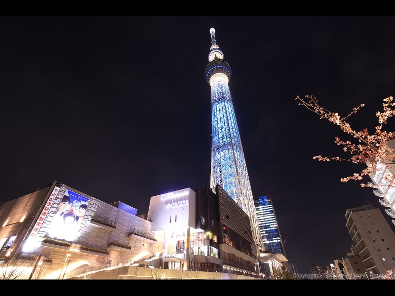
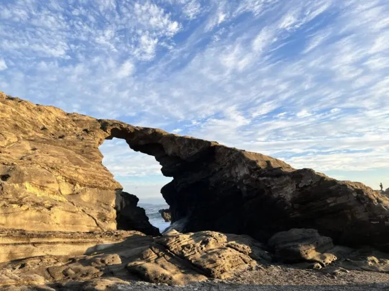
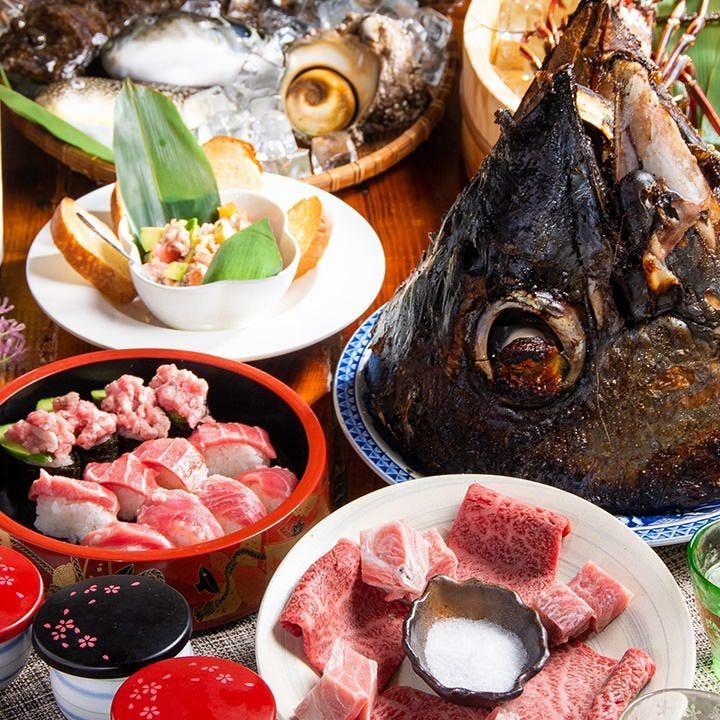
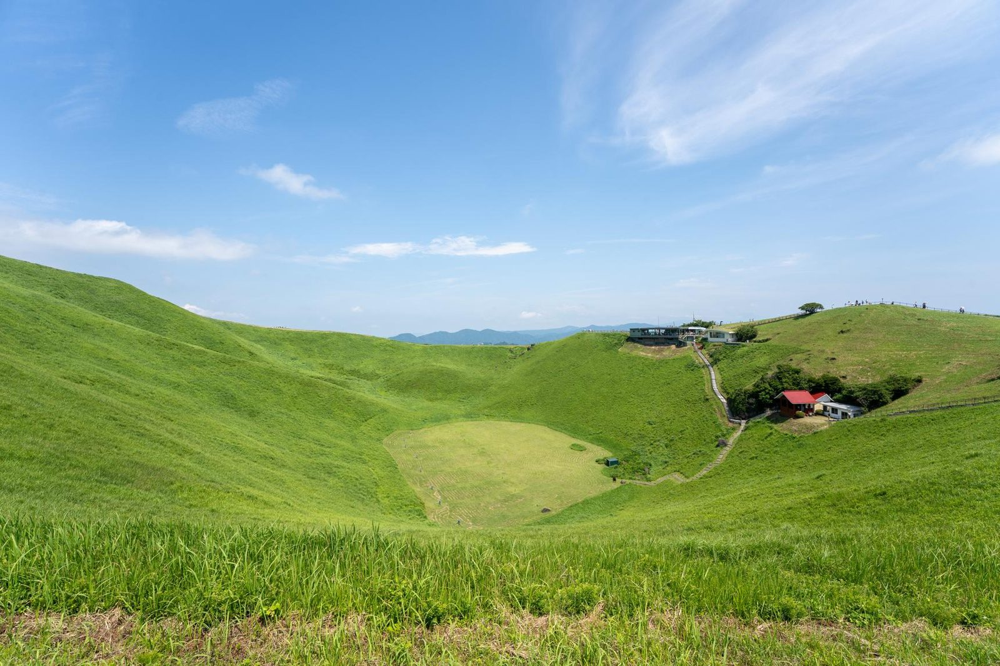
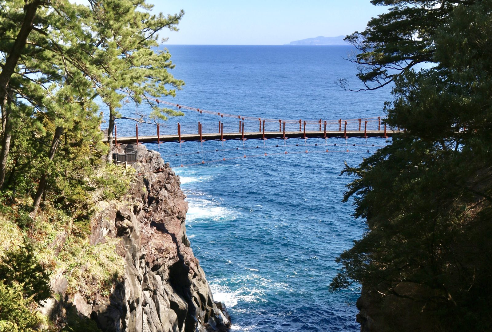

🔀 备选：砍掉城之岛，上午直下伊东，下午小室山轻徒步+海岸散步，节奏更松。



| 路线 | 数据 | 看点与条件 | 结论 |
|---|---|---|---|
| 城崎海岸线（伊豆） | 约 5km / 2.5–3h，起伏步道 | 熔岩悬崖+两座吊桥，伊豆东海岸代表路线；伊东出发当天往返 | ✅ 主推，排 1/3 |
| 大室山环口 | 约 1km / 40 分钟，平坦 | 缆椅上山，环火山口一周；冬季富士山能见度全年最高 | ✅ 排 1/3 上午 |
| 城之岛（三浦半岛） | 约 3km / 2h；品川往返车程约 3.5h | 海蚀拱门+灯塔+水仙路；顺路三崎港金枪鱼。代价：占 1/2 半天，傍晚才到伊东 | 🔀 决策点 1 |
| 小室山（伊东） | 约 1h，缆车+山顶环路 | 海景咖啡，强度最低；只适合抵达日填充 | 备选填充 |
| 天城山（百名山） | 环线 8.1km / 爬升 705m / 约 5h | 冬季公交结构性不合：巴士一天 3 班、始发到登山口 8:50 已过官方 8:00 入山建议线；山顶 1 月平均 -0.5°C，需轻冰爪。只能租车整日，砍掉 1/3 全部其他安排 | 🔀 决策点 2（不推荐，但可排） |
| 高尾山（东京） | 东京出发约 1h | 1/1–1/3 山顶寺院初诣人流为关东顶级规模，缆车排队以小时计，主路线终点即寺院 | ❌ 本趟不排 |